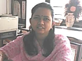

Information Technology

Vision:
To Cultivate technically proficient IT professionals.
Mission:
b>
M1: To groom for further studies and career oriented learning
M2: To imbibe behavioral & technical skills to meet the present and future needs of society.
Programme Educational Objectives (PEOs):
PEO I. Enhance knowledge and Career Growth through Post Graduation or various Certification programs.
PEO II. Utilize software and hardware skills for professional growth
PEO III. Expertise in mapping Design & Programming skills with the requirements of industry
PEO IV. Cater the needs of society using IT technologies
Programme Specific Outcomes(PSOs):
PSO 01. Implement the web-based, security, networking, programming and database technologies as per the requirements of IT Industry.
PSO 02. Provide technical support to identify and solve problems at customer site
About Department:
Information Technology Department has been established in 2001. Right from its development the department has strived to inculcate in the students not only with the technical know how of the information technology field but also encourage them to contribute positively towards the society.
To equip the students with the technical details regarding the software and hardware, the department has major laboratories namely Information Lab 1 to Information Lab 6.
Each Lab consists of adequate equipments and softwares to conduct the practicals required to be conducted in the diploma course.
The department not only teaches the curriculum but also tries to nurture the overall development of the students. Hence with this intention, we had formed the Student Association of Information Technology (SAIT) cell.
The association conducts various activities under this cell such as organising guest lectures, industrial visits and various competitions like paper presentations, quiz, programming contests etc.
We take immense pride to declare that many of our alumni are prominently placed in major MNC not only in India but abroad as well.
Many of our alumni are working in major IT Companies such as Persistent, InfoSys, Cognizant, etc.
Many of our alumni are successful entrepreneurs and are providing employment to others as well.
Prof. M. S. Karande
HOD, Information Technology
K. K. Wagh Polytechnic, Nashik-3
Home